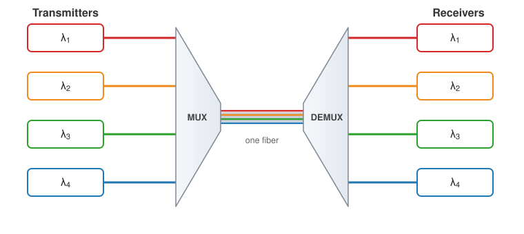
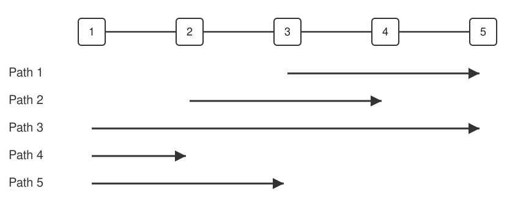
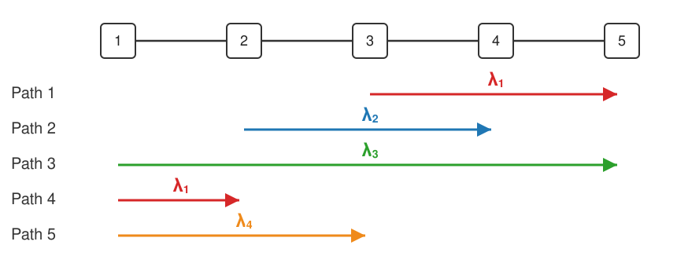
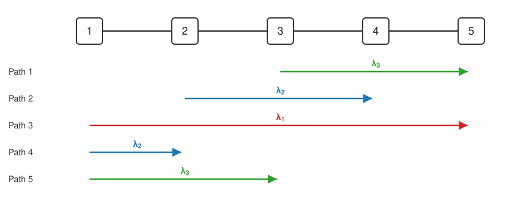

Wavelength Assignment Problem
Optical networks carry information as light traveling through glass fibers. Wavelength Division Multiplexing (WDM) increases how much a single fiber can carry by sending several beams of light through it at once, each on a different wavelength. Because the beams occupy distinct wavelengths, they travel side by side without interfering: a multiplexer combines them into the fiber at one end, and a demultiplexer separates them again at the other.

In an all-optical network, a beam of light can pass straight through an optical switch without being converted to an electrical signal and back. Avoiding this optical–electrical–optical (OEO) conversion makes the network cheaper and more energy-efficient, but it comes with a constraint: a connection must keep the same wavelength all the way from its source to its destination, a property called wavelength continuity. On top of that, two connections that share a fiber cannot use the same wavelength on it, since their beams would overlap.
A connection routed across the network on a chosen wavelength is called a lightpath. Given the set of lightpaths the network has to carry, the Wavelength Assignment Problem asks for the smallest number of wavelengths needed, and for an assignment of one wavelength to each lightpath that respects both constraints above. Using fewer wavelengths means more traffic fits on the same fiber.
This page is based on work I did in 2018, which you can find in this repository.
A first example
Consider five optical switches connected in a line, and five connections to carry across them. Each connection occupies every fiber between its two endpoints. They are drawn below the line as arrows, labelled Path 1 to Path 5:

Two connections can share a wavelength only if they use no fiber in common. One way to assign wavelengths is to take the connections in order and give each the lowest-numbered wavelength not already used on a connection it overlaps:
- Path 1 takes $\lambda_1$.
- Path 2 overlaps Path 1 on the fiber between switches 3 and 4, so it needs $\lambda_2$.
- Path 3 spans the whole line and meets both, so it needs $\lambda_3$.
- Path 4 shares no fiber with Path 1 or Path 2, so $\lambda_1$ is free to reuse.
- Path 5 overlaps Paths 2, 3 and 4, leaving $\lambda_4$ as the lowest free one.

This order needs four wavelengths. Taking the connections in a different order changes the result. Ordering them by how many others they overlap (Path 3 overlaps all four, Paths 2 and 5 overlap three, Paths 1 and 4 overlap two) and assigning in that order:
- Path 3 takes $\lambda_1$, Path 2 takes $\lambda_2$, Path 5 takes $\lambda_3$.
- Path 1 overlaps Paths 3 and 2 but not Path 5, so it can reuse $\lambda_3$.
- Path 4 overlaps Paths 3 and 5 but not Path 2, so it can reuse $\lambda_2$.

Both assignments are valid and differ only in the order the connections were taken, yet one uses four wavelengths and the other three. Choosing a good order is what the wavelength-assignment step has to do.
Solving the problem
When the route taken by each connection is also part of the question, the combined problem is known as Routing and Wavelength Assignment (RWA). Here the routes are fixed in advance, the variant called Static Lightpath Establishment (SLE RWA). It is NP-complete: no efficient algorithm is known that solves it exactly in all cases.
It breaks into three steps, which the rest of this page follows in order:
- Routing: choose the fibers each connection runs over. Every connection takes the shortest path between its endpoints, measured by geographic distance.
- Graph transformation: recast the network into a second graph that turns wavelength assignment into a standard problem on that graph.
- Wavelength assignment: assign a wavelength to every connection
using as few as possible. Two methods are shown:
- linear programming (optimal assignment)
- largest degree first (faster heuristic)
Routing: finding the shortest path
Before a wavelength can be assigned to a connection, the connection needs a route: an ordered list of fibers leading from its source switch to its destination switch. Here each connection follows the shortest route between its two switches, where the length of a fiber is the geographic distance between its endpoints, computed from their latitudes and longitudes with the haversine formula. Routes are therefore decided in advance, leaving wavelength assignment as the only remaining problem.
The shortest path is found here with linear programming rather than a dedicated algorithm such as Dijkstra's.
Variables and objective
The network is a graph $$(S, F)$$ with $$S$$ the set of switches and $$F$$ the set of fibers. Each fiber is undirected; since a path may cross it either way, every fiber is replaced by two directed arcs, one per direction. Writing $$A$$ for this set of arcs, we associate a binary variable to each arc:
\[ x_{ij} = \begin{cases} 1 & \text{if the path uses the arc from } i \text{ to } j \\ 0 & \text{otherwise} \end{cases} \]Writing $$d_{ij}$$ for the length of the fiber underlying arc $$(i, j)$$, the length of the path is the quantity we want to minimize:
\[ L = \sum_{(i,\,j)\,\in\,A} d_{ij}\, x_{ij} \]Flow-conservation constraints
Minimizing the length on its own would just select no fibers at all. The variables are tied together by flow-conservation constraints, which force the chosen fibers to form a single connected path from the source to the destination. Thinking of one unit of traffic flowing along the path:
- At the source $$s$$, one more unit leaves than enters:
- At any switch other than the source and the destination, as much traffic leaves as enters, so nothing accumulates:
- The variables are binary:
At the destination $$d$$, one more unit enters than leaves, which reads as a fourth equation:
\[ \sum_{j\,:\,(d,\,j)\,\in\,A} x_{dj} \;-\!\! \sum_{j\,:\,(j,\,d)\,\in\,A} x_{jd} = -1 \]This one need not be stated: summing the source and intermediate equations above gives exactly its negative, so it is already implied by them.
In the map below, the dashed gray line is a traffic demand (a request to connect a source to a destination), and the red path is the shortest route the solver lays out for it over the fibers.
Python implementation
from math import asin, cos, radians, sin, sqrt
from cvxopt import matrix, glpk
def haversine(a, b):
# geographic distance (km) between two (latitude, longitude) points
lat1, lon1, lat2, lon2 = map(radians, (*a, *b))
h = sin((lat2 - lat1) / 2)**2 + cos(lat1) * cos(lat2) * sin((lon2 - lon1) / 2)**2
return 2 * 6371 * asin(sqrt(h))
def shortest_path(switches, fibers, coords, source, destination):
# each fiber is split into two directed arcs, one per direction
arcs = [(u, v) for (a, b) in fibers for (u, v) in ((a, b), (b, a))]
# objective: minimize the total length of the chosen arcs
cost = [haversine(coords[u], coords[v]) for (u, v) in arcs]
# flow conservation: outgoing minus incoming flow equals +1 at the source
# and 0 at every switch except the destination (whose equation is implied)
A, b = [], []
for switch in switches:
if switch == destination:
continue
A.append([1. if u == switch else -1. if v == switch else 0. for (u, v) in arcs])
b.append(1. if switch == source else 0.)
# minimize cost . x subject to A x = b, x binary
empty = matrix(0., (0, len(arcs)))
_, x = glpk.ilp(matrix(cost), empty, matrix(0., (0, 1)),
matrix(A).T, matrix(b), B=set(range(len(arcs))))
return [arcs[i] for i in range(len(arcs)) if x[i] > 0.5]Reduction to a graph coloring problem
Once the routes are fixed, the wavelength constraint only involves pairs of connections that share a fiber: two such connections must get different wavelengths, while any two that share no fiber may reuse the same one. This is exactly the structure of a graph coloring problem, so the network is recast into a second graph:
- Every connection becomes a vertex.
- Two vertices are joined by an edge whenever their connections share at least one fiber.
Coloring the vertices so that adjacent ones get different colors is then the same as assigning wavelengths so that connections sharing a fiber differ, and the fewest colors needed (the chromatic number of the graph) is the fewest wavelengths needed.
In the five-path example, the pairs of connections sharing a fiber are (P1, P2), (P1, P3), (P2, P3), (P2, P5), (P3, P4), (P3, P5) and (P4, P5), which gives a graph on five vertices. The same construction applies to the backbones routed above, shown in the graph below.
What remains is to color this graph with as few colors as possible. That is the wavelength-assignment step.
Wavelength assignment by linear programming
Coloring the graph with the fewest colors can be written as an integer linear program, which returns the optimal assignment. Write $$G(P, E)$$ for the transformed graph, with one vertex per connection $$p \in P$$, and let $$\Lambda = \{\lambda_1, \dots, \lambda_K\}$$ be the available wavelengths. Two families of binary variables describe an assignment:
\[ \begin{aligned} &x_p^{\lambda} = \begin{cases} 1 & \text{if wavelength } \lambda \text{ is assigned to connection } p \\ 0 & \text{otherwise} \end{cases} \\[1.5ex] &y_{\lambda} = \begin{cases} 1 & \text{if wavelength } \lambda \text{ is used by at least one connection} \\ 0 & \text{otherwise} \end{cases} \end{aligned} \]The aim is to use as few wavelengths as possible, so the objective minimizes how many are switched on:
\[ \min \sum_{\lambda \in \Lambda} y_{\lambda} \]Constraints
- All variables are binary.
- Every connection is assigned exactly one wavelength.
- Two connections that share a fiber (an edge of $$G$$) cannot take the same wavelength, and assigning a wavelength to either one marks that wavelength as used.
- Wavelengths are switched on in order of index, so that relabelings of the same solution are not counted twice.
The number of available wavelengths $$K$$ is an upper bound on the answer. Taking it as one more than the largest number of connections meeting at any vertex (the maximum degree of $$G$$) always leaves room for a valid assignment.
The graph below is colored with the fewest wavelengths, and the map shows each connection drawn in its assigned wavelength. Where several connections share a fiber, their wavelengths appear as parallel lines.
Python implementation
from cvxopt import matrix, glpk
def color_graph(paths, edges, K):
# variables: x_p_l for each path p and wavelength l, then y_l
# laid out as [x_0_0, ..., x_0_{K-1}, x_1_0, ..., y_0, ..., y_{K-1}]
V = len(paths)
n = V * K + K
# objective: minimize the number of wavelengths used, sum of y_l
c = [0.] * (V * K) + [1.] * K
# each path gets exactly one wavelength: sum_l x_p_l = 1
A, b = [], []
for p in range(V):
A.append([1. if p * K <= i < (p + 1) * K else 0. for i in range(n)])
b.append(1.)
G, h = [], []
# adjacent paths differ, and using a wavelength switches its y_l on:
# x_p_l + x_q_l - y_l <= 0
for p, q in edges:
for l in range(K):
row = [0.] * n
row[p * K + l], row[q * K + l], row[V * K + l] = 1., 1., -1.
G.append(row); h.append(0.)
# symmetry breaking: y_l - y_{l-1} <= 0
for l in range(1, K):
row = [0.] * n
row[V * K + l], row[V * K + l - 1] = 1., -1.
G.append(row); h.append(0.)
A, G, b, c, h = map(matrix, (A, G, b, c, h))
_, x = glpk.ilp(c, G.T, h, A.T, b, B=set(range(n)))
# the wavelength assigned to each path
return [next(l for l in range(K) if x[p * K + l] > 0.5) for p in range(V)]Wavelength assignment by largest degree first
The linear program always returns the minimum number of wavelengths, but solving it grows expensive and does not scale to large networks. The largest-degree-first heuristic is a fast alternative. It colors the vertices one at a time, starting with the most constrained:
- Take the uncolored vertex of largest degree.
- Give it the lowest-numbered wavelength not already used by one of its neighbors.
- Repeat until every vertex is colored.
This is the second strategy from the first example, now stated on the graph: the degree of a vertex is the number of connections it shares a fiber with, so taking the largest-degree vertex first is taking the most-overlapping connection first.
Coloring the busiest vertices first keeps the count low, but the heuristic only ever looks at one vertex at a time and can settle for more wavelengths than the optimum the linear program finds. On the backbone below it runs instantly, where the linear program would already be slow.
Python implementation
def largest_degree_first(graph):
# graph maps each path to the list of paths it shares a fiber with
color = {}
# color the paths in decreasing order of degree
order = sorted(graph, key=lambda path: len(graph[path]), reverse=True)
for path in order:
used = {color[n] for n in graph[path] if n in color}
# lowest wavelength index not used by a neighbor
wavelength = 0
while wavelength in used:
wavelength += 1
color[path] = wavelength
return color